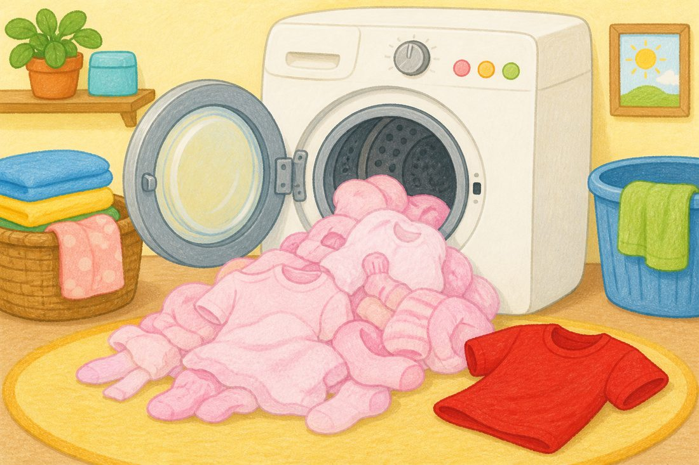
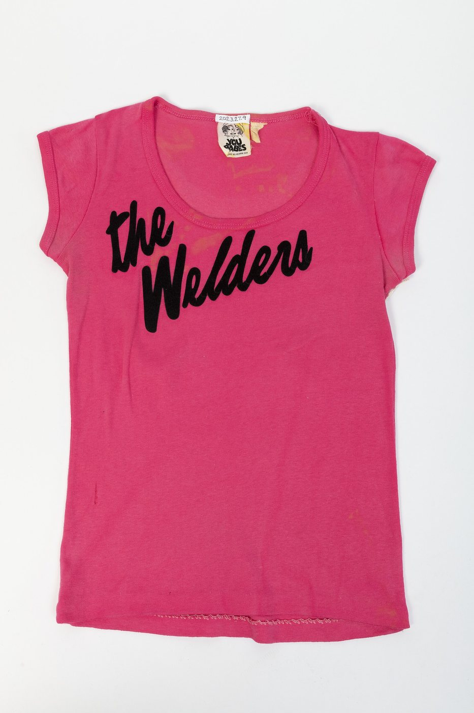
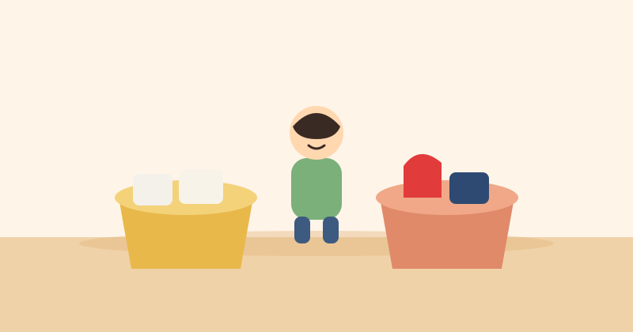

哇，白衣服變粉紅了
一桶白衣服洗完，拿出來粉粉的。誰把顏色跑出來了？

真的那邊：有人在拿剛洗好的衣服。裡面有紅的，也有白的。不是我們家那一次，可是就是這樣拿出來看。
先看，不要急著猜
四樣東西都看一看。每一樣都有圖畫，也有真的。
線索

是誰把顏色跑出來？
用手指一下。猜錯沒關係，再看就好。
嗯，再看一次好了。新的、紅的，比較容易把顏色跑出來。
對，是新的紅衣服
它把紅色放到水裡，白衣服就變成粉紅了。那下次要記住什麼？
再想一下就好。新的紅衣服，自己洗，白衣服才不會變色。
下次真的洗衣服，你來分
不是分數。是下次媽媽、爸爸、阿嬤洗衣服的時候，你站旁邊看：哪一件是新的紅衣服？把它分開。

家裡真的做一次，這件事才算做完。
回到家圖畫是畫的。「真的」是網路上的真實照片，不是電腦生的假照片。來源寫在 README。